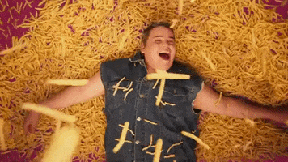

Why do we make and eat fries?
Because they make us happy.
Why do we make and eat fries?
Because they do.

Science need not corroborate this claim.
The simplest reason is often the best reason—
just ask Occam and his razor.
In the Nicomachean Ethics, Aristotle propagated the philosophy that happiness
is the ultimate purpose of human existence and thus,
if something makes you happy while not being excessive or fleeting, it’s worth pursuing
As long as you don’t overindulge, fries can walk beside you on the path to happiness.
I can assure you of that. I have 30 years of experience.
A study conducted at the University of Illinois found that,
“comfort foods may be consumed to positively pique emotions,
to relieve negative psychological effects,
or to increase positive feelings.”
To make you happy in other words.
Comfort food also evokes patriotism, which is linked to happiness.
Chinese philosopher Lin Yutang said it best: “What is patriotism but the love of the good
things we ate in our childhood?”
Potatoes make you happy.
A large chunk of the population suffers
from sugar sensitivity, which can cause mood swings and depression.
Dr. Kathleen DesMaisons, in her book „Potatoes Not Prozac“, calls potatoes,
“an antidepressant in a brown package,” and she recommends taking a skin-on potato,
or even skin-on oven fries, before night-night time
(I have kids) to raise levels of serotonin, the monoamine neurotransmitter that
promotes wellbeing and happiness. Toss some salt (which lowers stress hormones and
raises the hormone linked to love) on those oven fries, and you’ll be even happier.